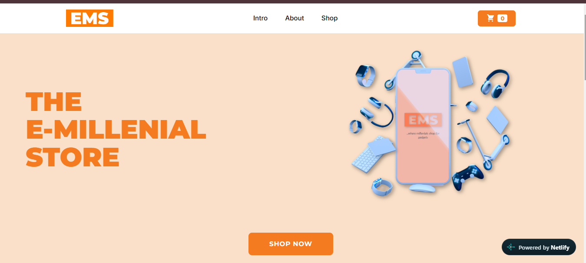
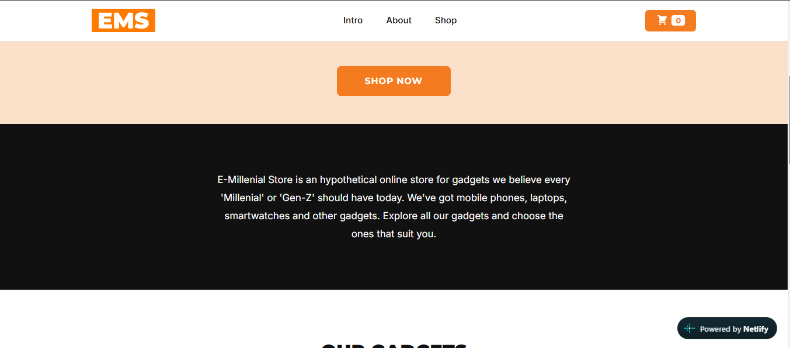
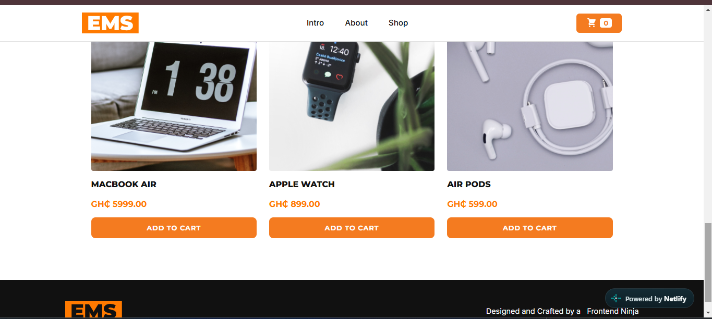
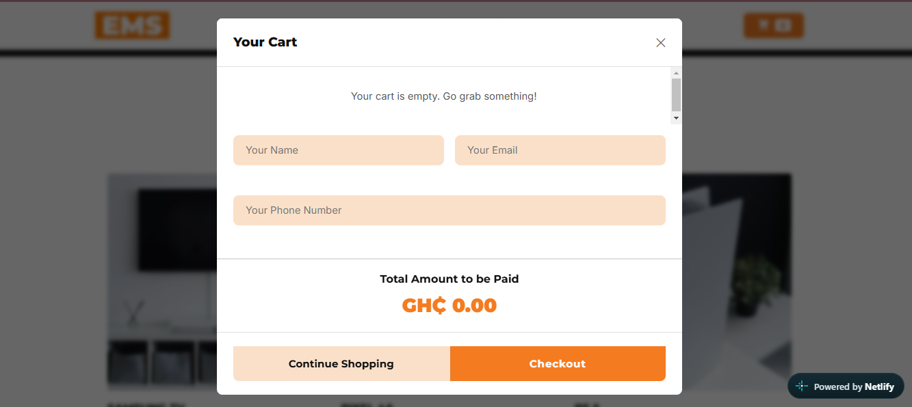

Product Catalogue
Displays gadgets in a browsable storefront interface.
WEB DEVELOPMENT · E-COMMERCE
A responsive gadget storefront demonstration built with HTML, CSS and vanilla JavaScript, featuring product browsing, cart management, checkout validation and an optional Paystack test-mode payment flow.
Explore the Source Code on GitHubPROJECT OVERVIEW
E-Millennial Store is a frontend e-commerce demonstration designed to provide an interactive gadget-shopping experience.
Visitors can browse products, add items to a shopping cart, change quantities, review their order and complete a checkout form. The project also includes an optional Paystack test-mode integration.
This is a frontend demonstration rather than a production e-commerce platform. It does not provide secure server-side order processing or payment verification.
PROBLEM AND OBJECTIVE
A storefront must present products clearly while making it easy for customers to select items, update quantities and understand their total order.
The objective was to build a responsive shopping interface and implement essential client-side interactions without relying on a large frontend framework.
MY CONTRIBUTION
I developed the frontend storefront using HTML, CSS and JavaScript. The work included page layout, product presentation, shopping-cart interactions, quantity controls, checkout form validation and the test-payment interface.
CORE FEATURES
Displays gadgets in a browsable storefront interface.
Allows users to add products and adjust item quantities.
Collects customer details and applies client-side validation.
Includes an optional Paystack test-mode checkout flow.
TOOLS AND TECHNOLOGIES
Structures the storefront, product information and forms.
Controls layout, typography, responsiveness and visual styling.
Handles cart interactions, quantity changes and form validation.
Supports an optional test-payment popup using a test public key.
DEVELOPMENT PROCESS
PROJECT OUTCOME
The project brings together product presentation, shopping-cart controls, order summaries and checkout validation in a single frontend application.
It demonstrates how JavaScript can support interactive shopping experiences while HTML and CSS provide the underlying structure and presentation.
PROJECT SCREENSHOTS
Screenshots from the storefront demonstrate the landing page, introduction, product catalogue and empty-cart checkout form. The images document the interface, not successful payment processing.




LIMITATIONS AND LESSONS
The project provided practical experience in responsive design, DOM manipulation, frontend state management and form validation.
A key limitation is that order totals are calculated in the browser. These values cannot be trusted for real payment processing.
A production system would require a secure backend to calculate prices, verify transactions and manage orders.
The Paystack integration runs in test mode only; no live payment keys are used.
PROJECT EVIDENCE
The source code and README are available on GitHub. A live demonstration will be linked after deployment and testing.